Instructions
On this page it is explained how to achieve certain tasks within the Vizlab web-application.
1. Skeleton
In this chapter it is explained how to add, remove, hide, save and load parts of a skeleton. To be able to refer to certain buttons i created an overview of the skeleton-buttons.
Skeleton
Image: an overview of the buttons
1.1 Drawing a skeleton-connection
-
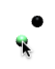
- First select a marker. 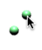
- Then select another marker. 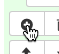
- Click button 2 or press the "a" character on your keyboard. 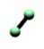
- A connection has been drawn.
1.2 Deleting a skeleton-connection
-
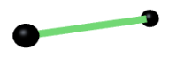
- First select a connetion. 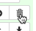
- Click button 3 or press the "d" character on your keyboard.
1.3 Hiding the skeleton
- Make sure a skeleton is loaded or drawn. 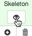
- Click button 1 to hide the skeleton.
- To show the skeleton click the button again.
1.4 Saving a skeleton
- Make sure a skeleton is loaded or drawn. 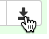
- Click button 5 to open the window for saving the skeleton. 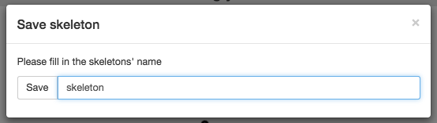
- Type in the preferred name for the skeleton. 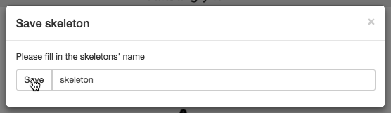
- Click the save button and the skeleton will be saved.
1.5 Loading a skeleton
-
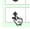
- Click button 4 to open the window for choosing loading the skeleton. 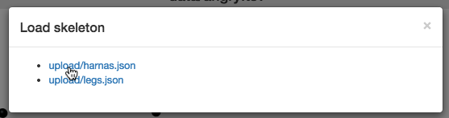
- Click the preferred skeleton to be loaded.
2. Selected
In this chapter it is explained how to make selected items smaller, bigger, hide them or unselect them.
Selected
Image: an overview of the buttons
2.1 Hiding selected items
- Make sure something is selected. 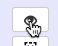
- Click button number 6.
- Al selected markers disappeared
2.2 Deselect all objects
- Make sure something is selected.
- Click button 7 with the corresponding deselect icon.
- No object is selected anymore.
2.3 Change the size of selected object type
- Make sure something is selected.
- Click button 8 or 9 corresponding to your preference.
- The size of the selected type increases or decreases dependant on your choice.